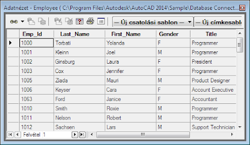

Adatbázisrendszerek
A tárgy célja az adatmodellezés elveinek elsajátítása, a relációs adatmodell megismerése,
a relációs adatbázis-kezelés megismerése, SQL nyelv alkalmazása.
Tartalom:
- Adatkezelés és adatbázis-kezelés alapfogalmai
- Fájlszervezési módszerek
- Adatbázis architektúra
- Adatmodellek
- ER adatmodell
- Az SQL szabvány relációs kezelõ nyelv bemutatása
- Az adatmodellezés problémái
- SQL implementációnak áttekintése
|
|
 |